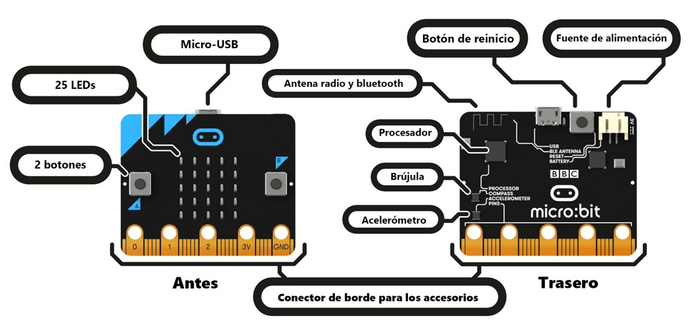
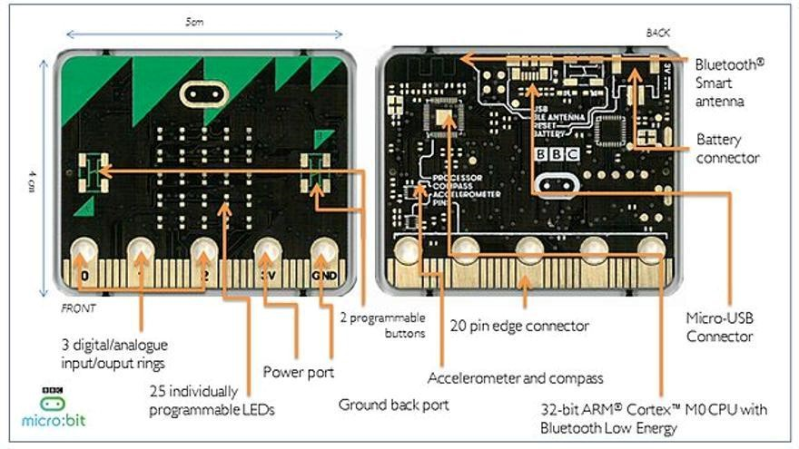
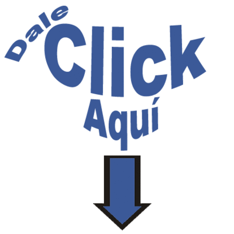

Componentes de la Micro:bit
Observa la imagen:

En tú cuaderno de informática dibuja la micro:bit con cada uno de componentes, como la imagen anterior.
Observa esta otra imagen:

Material Necesario:
Conoce las partes de la Micro:bit
Material de Apoyo

Actividad:
Realiza una captura de imagen de tú dibujo de la micro:bit y crea una lista con los diferentes componentes de la micro:bit; envía esta actividad al correo electrónico o WhatsApp del Docente
Email: Johnyyaq10@hotmail.com
WhatsApp: +57 321 223 44 31